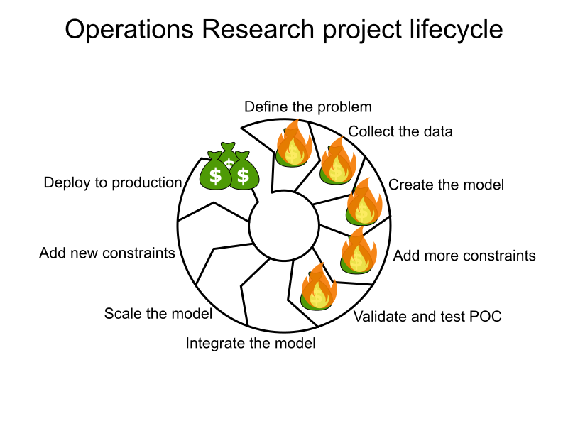
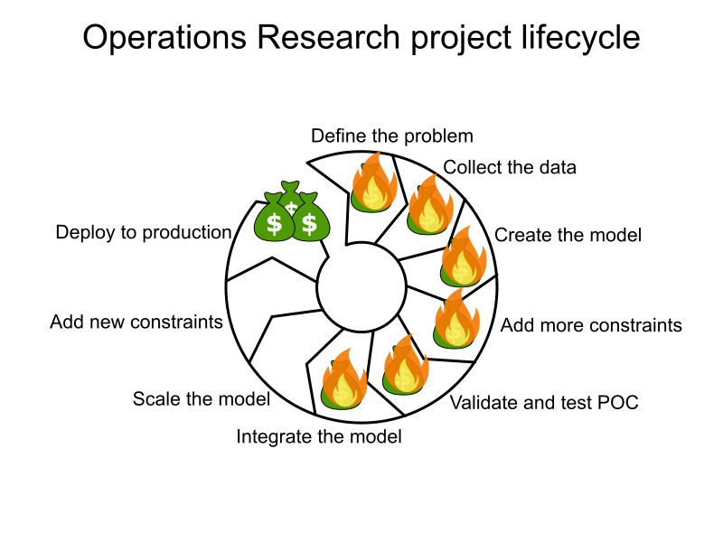
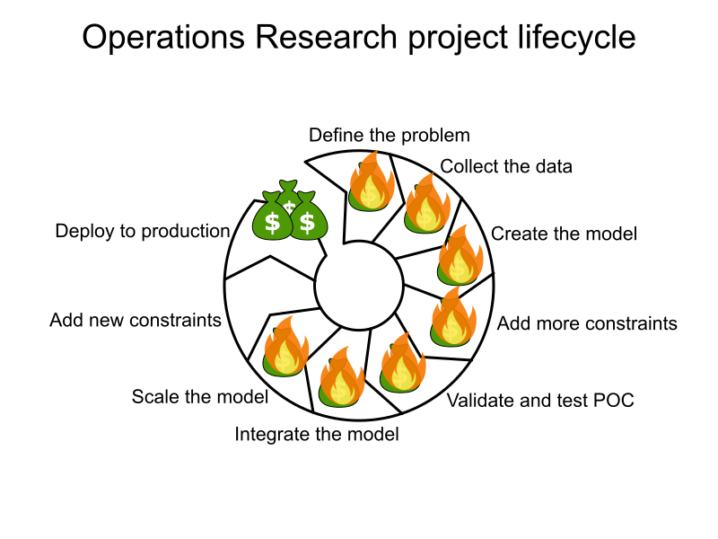
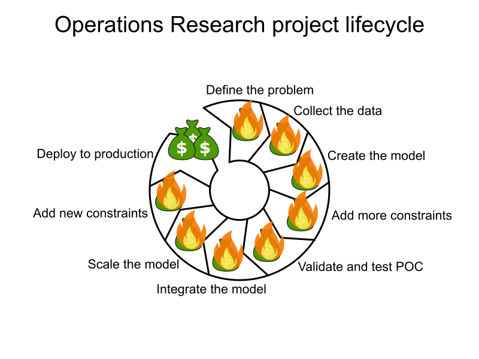
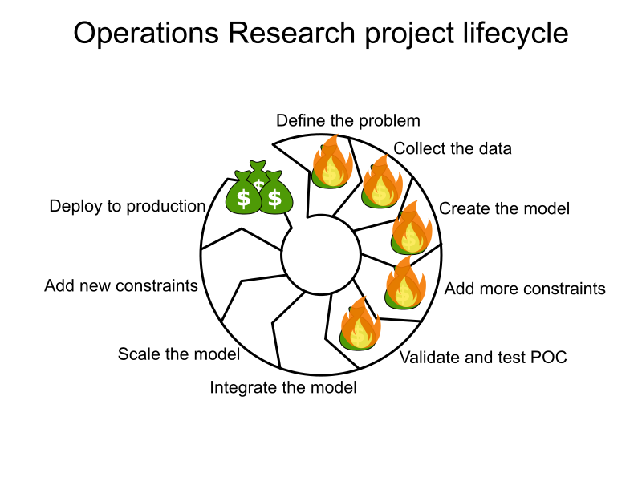
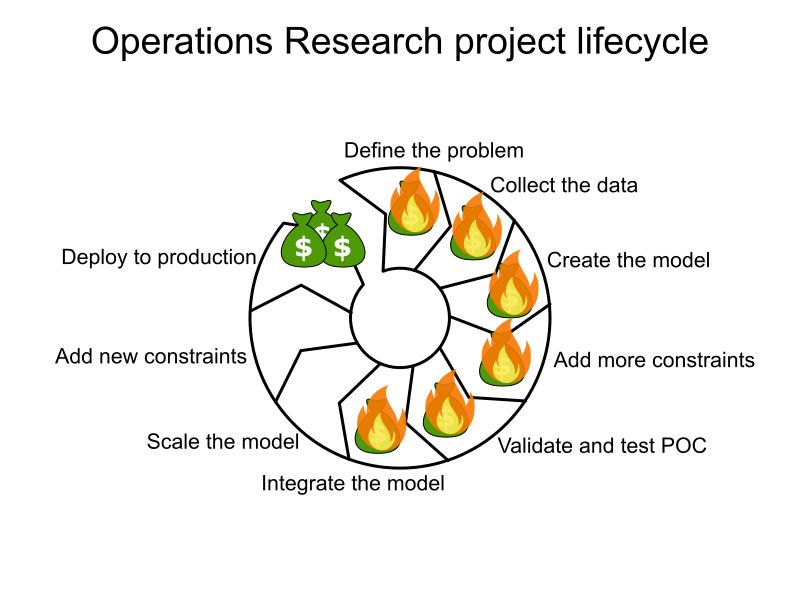
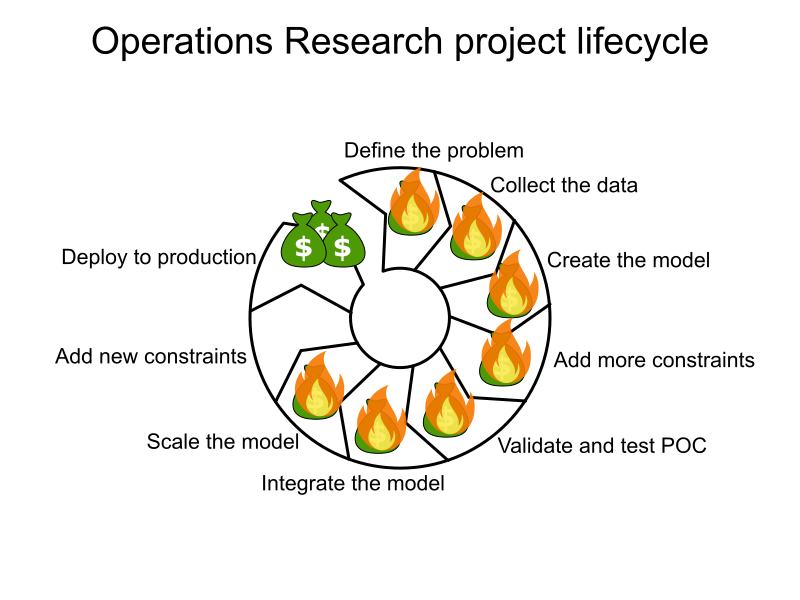
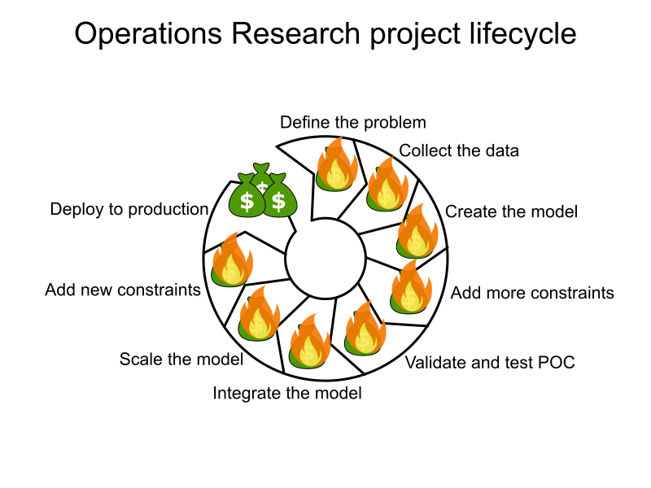

Geoffrey De Smet
Geoffrey De Smet
Open source solver
for
software engineers
by Geoffrey De Smet
The world is full
of scheduling problems
For example


The world is full
of scheduling problems
Some are automated
Few are optimized
They use...
Excel
Drag and drop
Scheduling UI

Optimized for KPIs
Operations Research
Why are so few optimized?
Less than 5%
Technology problem?
30+ years
CPLEX 1.0 in 1988
ROI problem?

Vehicle routing case study
Expected: -1% driving time
Result: -25% driving time
⇒ -10 million kg CO² emission per year
⇒ -100 million $ cost per year
Reputation problem?
Yes
Too difficult
MATH
High risk
What we see
What management sees

 








Can we fix that?
Succeed more
❤️
Fail faster
Reduce risk
Easy to use
Our mission
Free the world of wasteful scheduling
- Solver
- Open Source (Apache license)
- REST APIs for
- Field Service Routing
- Employee Shift Scheduling
- Job Scheduling
- Pickup and Delivery Routing
Timefold Solver
Open source


OR code (traditional)
javafor (int i = 0; i < numEmployees; i++) {
for (int j = 0; j < numShifts; j++) {
for (int k = j + 1; k < numShifts; k++) {
model.addConstraint(
LinearExpr.sum(new IntVar[]{s[i][j], d[j], r[i]})
.leq(s[i][k])
).onlyEnforceIf(new IntVar[]{x[i][j], x[i][k]});
}
}
}

Why Ease of Use?
"We spend
10x more time reading
production code
than writing it."
Code should be
easy to read


Timefold Solver code
javaf.forEach(Shift.class)
.join(Shift.class, equal(Shift::employee),
lessThanOrEqual(Shift::end, Shift::start))
.filter((shift1, shift2) ->
Duration.between(shift1.end, shift2.start)
.compareTo(shift1.employee.restDuration) < 0)
.penalize(ONE_HARD)
.asConstraint("Enough rest between shifts");
How many constraints?
A scaling problem
A real-word dataset (traditional)
- 10k employees
- 50k shifts
javafor (int i = 0; i < numEmployees; i++) { // 10k loop
for (int j = 0; j < numShifts; j++) { // 50k loop
for (int k = j + 1; k < numShifts; k++) { // 25k loop
model.addConstraint(...).onlyEnforceIf(...);
}
}
}
2 500 000 000 000 CPU loops
2 500 000 000 000 constraints in memory
Out of memory error
A real-word dataset (Timefold)
- 10k employees
- 50k shifts
javaf.forEach(Shift.class)
.join(Shift.class, equal(Shift::employee)) // ~250k tuples
.filter() // 0-10 tuples
.penalize(ONE_HARD)
.asConstraint("Enough rest between shifts");
1 constraint
Only 250k tuples in memory
Lazy, incremental and indexed
How many solutions per second?
Check the Timefold log:
log08:27:00.867 INFO Solving started: ...
08:27:02.528 INFO Construction Heuristic ended: ...
move evaluation speed (39580/sec) ...
08:27:21.313 INFO Local Search ended: ...
move evaluation speed (101701/sec) ...
08:27:21.317 INFO Solving ended: ...
move evaluation speed (101461/sec) ...
It looks at 100 000 solutions per second
Incremental calculation
Why not plain java code?


If it isn't tested,
it doesn't work.
Unit testing
- Given:
- Ann at least 10 hours rest
- Shift Monday 14:00-22:00 = Ann
- Shift Tuesday 06:00-14:00 = Ann
- Expected: penalty
javavar ann = new Employee("Ann", ...);
verifier.verifyThat(employeeMinimalRest)
.given(ann,
new Shift(mon1400, mon2200, ann),
new Shift(tue0600, tue1400, ann))
.penalizes());
Isolated per constraint
If it isn't documented,
it isn't used.
DEMO
docs.timefold.ai
🖊 Model domain
⚖️ Define constraints
🚀 Run!
Free the world of wasteful scheduling
Build your own model
on open source
- Go to solver.timefold.ai
- Click Show me the code button
- Pick a quickstart
- Run it 🚀
Q & A
| Get started | solver.timefold.ai |
|---|---|
| Documentation | docs.timefold.ai |
| Feedback |
|